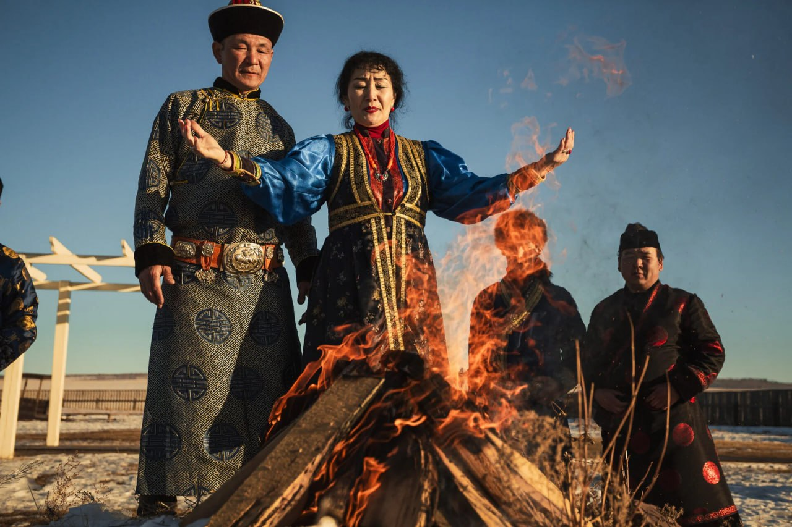
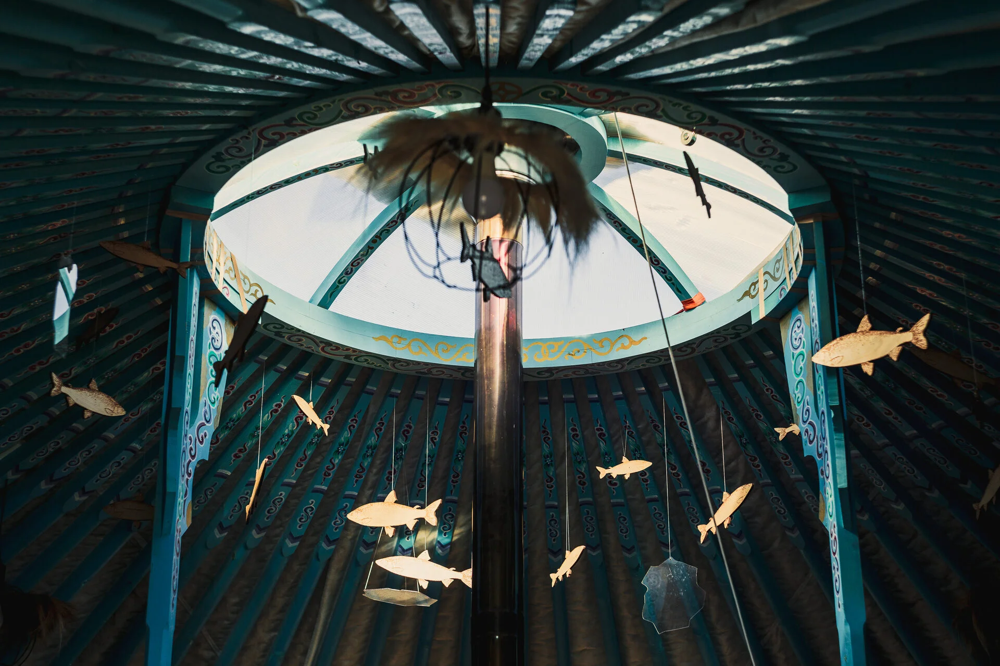
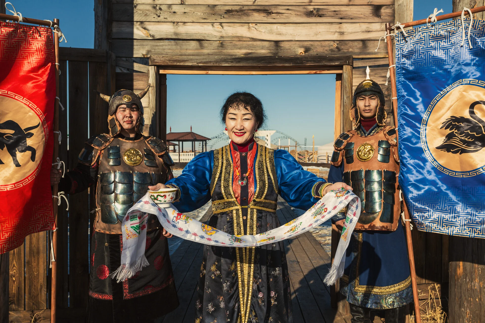
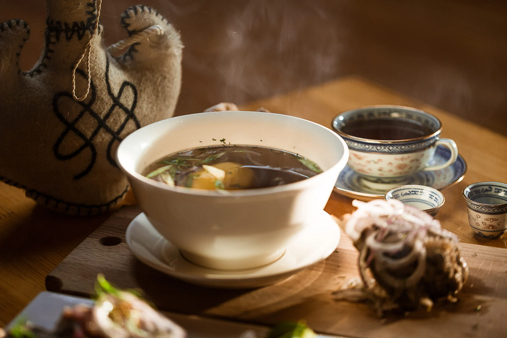

ДОБРО ПОЖАЛОВАТЬ В ЭТНОПАРК «ЗОЛОТАЯ ОРДА» – МЕСТО ЗНАКОМСТВА С КУЛЬТУРОЙ И ТРАДИЦИЯМИ КОРЕННОГО НАСЕЛЕНИЯ ПРИБАЙКАЛЬЯ

Этнопарк «Золотая Орда» расположен в живописной местности по дороге на озеро Байкал. Мы предлагаем гостям познакомиться с этнокультурной самобытностью коренного населения, бережно хранимой бурятским народом на протяжении веков.
Этнопарк знакомит с национальной кухней и самой красивой резной юртой России, освящённой настоятелем местного дацана
Тубдэн Даржелин (пер. с тибетского «Земля возрождения учения Будды»). Выполненная из ценных пород дерева, юрта представляет собой уникальный объект, отражающий национальную культуру и религиозные ценности бурят.
Кроме того, представлены юрты, в которых можно погрузиться в традиционный быт и уклад. Действуют постоянные и сменные тематические выставки художников, ремесленников, продукцию которых можно приобрести в качестве сувениров. Гости смогут поучаствовать в национальных обрядах, играх и забавах, спортивных состязаниях, исторических квестах и реконструкции битв. Предусмотрены гастрономические, танцевальные и прикладные мастер-классы.
КОМПЛЕКС ЮРТ
На территории парка располагается комплекс оригинальных юрт, выполненных в разных стилях и тематических решениях. Это замечательное решение для творческих вечеров, конференций, закрытых кинопоказов, тимбилдингов, семинаров, лекций, банкетов.
НАЦИОНАЛЬНЫЕ ОБРЯДЫ
Погрузитесь в мир традиций местных народов. Мы приветствуем гостей сакральными песнями, танцами и игрой на народных инструментах.
НАЦИОНАЛЬНАЯ КУХНЯ
Вы можете поучаствовать в зимних и летних забавах, народных играх, попробовать себя в стрельбе из бурятского лука, национальной борьбе и ломании хребтовой кости крупнорогатого скота.